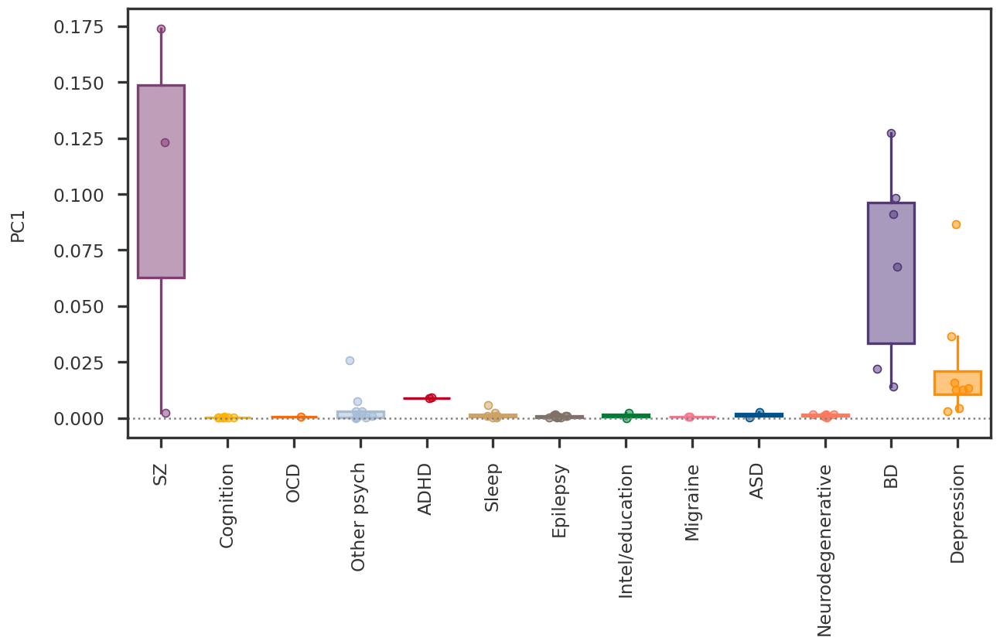
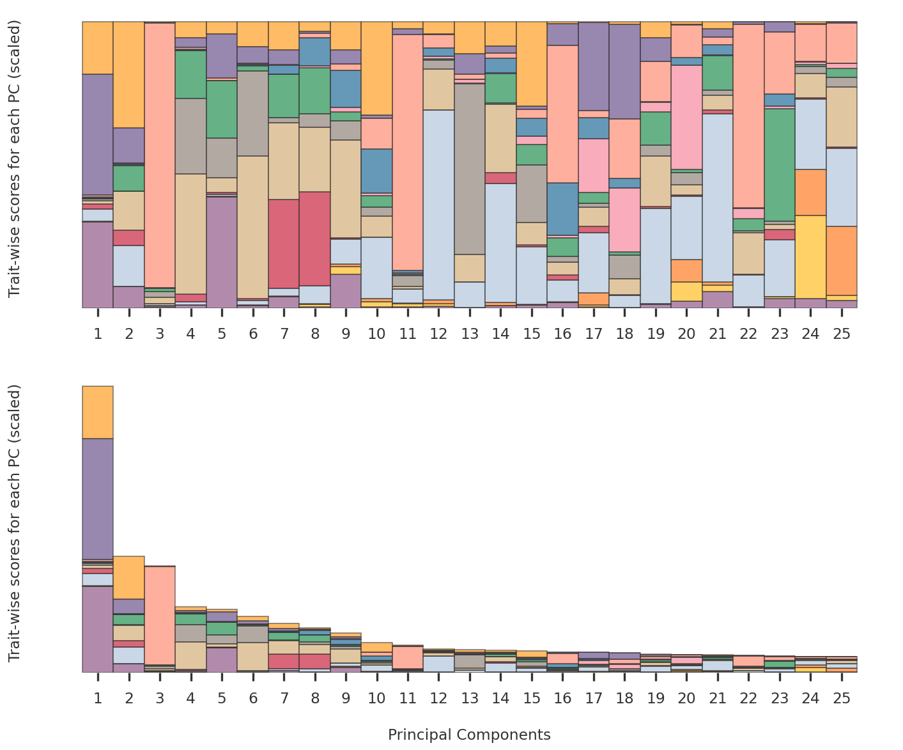
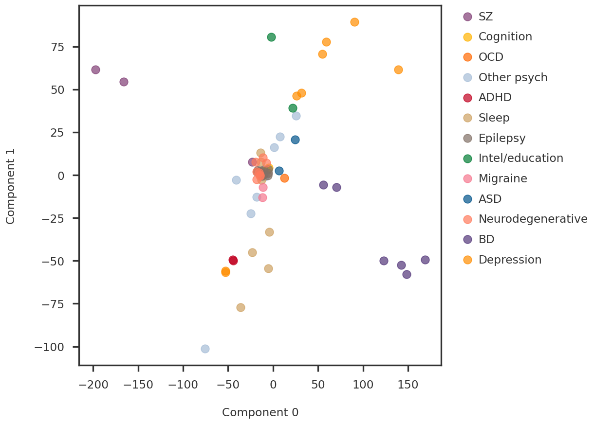
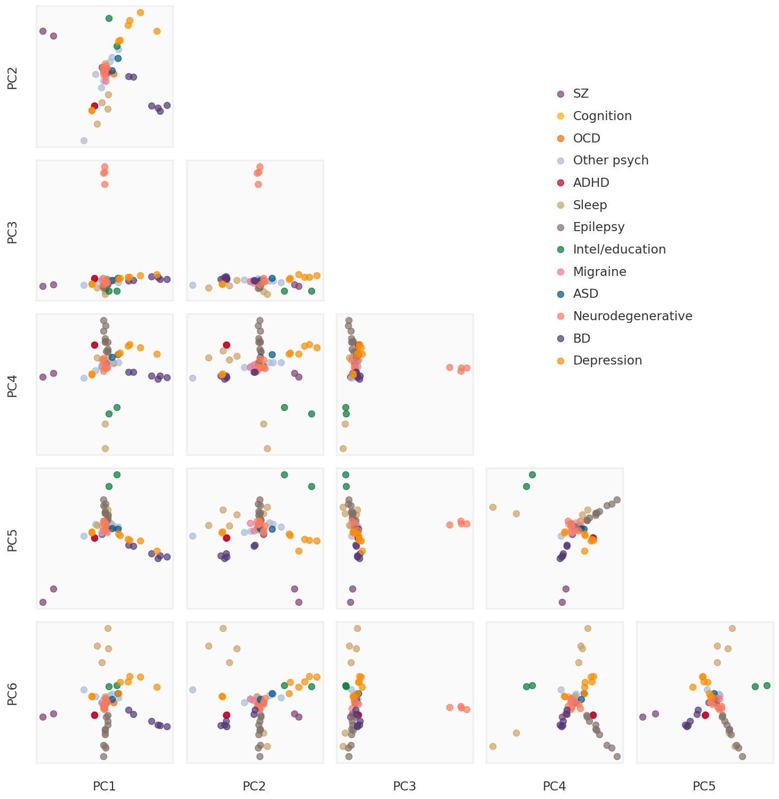
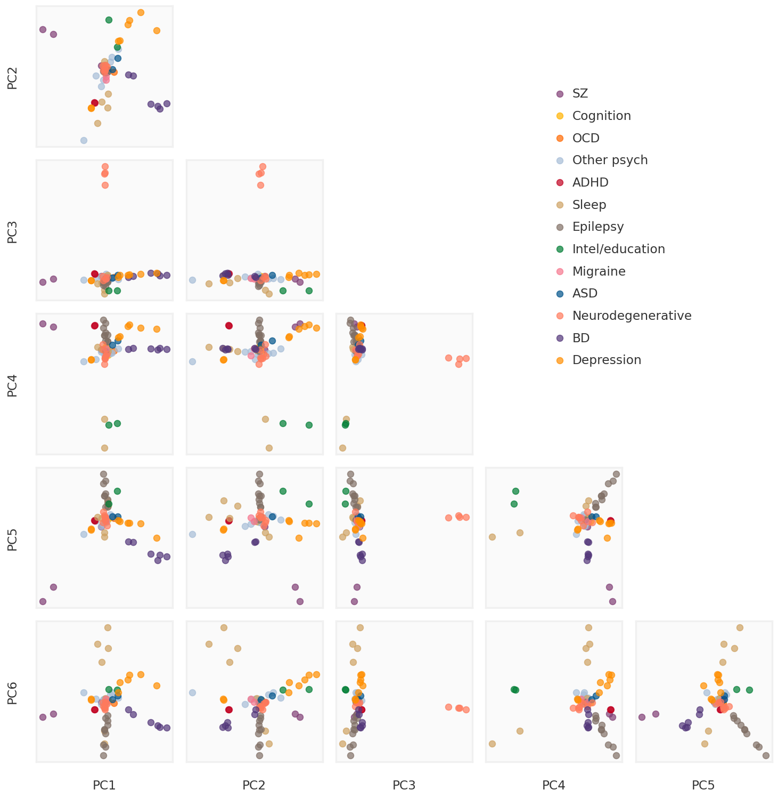
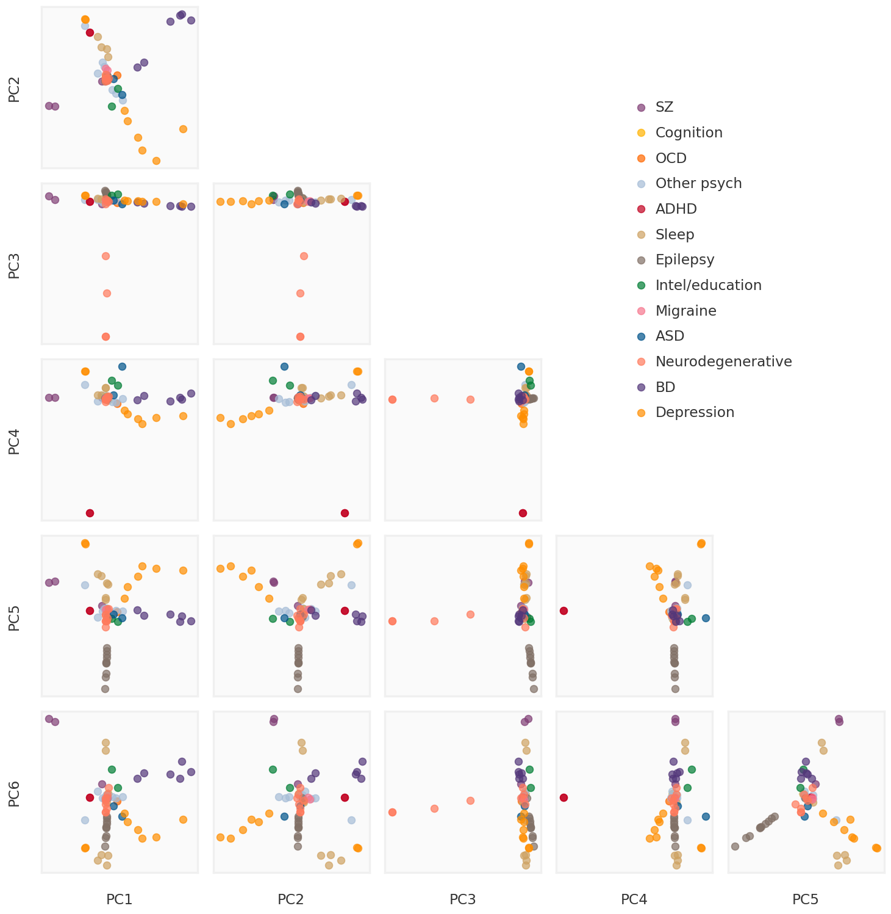

We label the GWAS phenotypes to visualize the separation of the principal components of the low rank approximation of the input matrix. For low rank approximation, we use RobustPCA and Nuclear Norm regularization, thus comparing the two methods.
About
Here, I try to qualitatively compare the different dimensionality reduction methods in terms of their ability to distinguish the different traits. Suppose \mathbf{X} is the N \times P input matrix, with N traits and P associated variants. The dimensionality reduction methods decompose the input matrix into a sparse low rank component, \mathbf{L} and a background \mathbf{E},
\mathbf{Y} \sim \mathbf{X} + \mathbf{E}
We perform PCA on the low rank matrix \mathbf{X} using the SVD,
\mathbf{X} = \mathbf{U}\mathbf{S}\mathbf{V}^{\intercal}
Then, the principal components are given by the columns of \mathbf{U}\mathbf{S}. The traits are broadly classified into NPD phenotypes. For each “broad phenotype” T and principal component k, we define the trait-wise PC score as,
V_{tk} = \sum_{t \in T}(U_{tk}S_k)^2
Note, the total variance explained by the component is \sum_{i}(U_{ik}S_k)^2 = S_k^2.
Code
import numpy as npimport pandas as pdimport matplotlib.pyplot as pltfrom pymir import mpl_stylesheetfrom pymir import mpl_utilsfrom nnwmf.functions.frankwolfe import frank_wolfe_minimize, frank_wolfe_cv_minimizefrom nnwmf.functions.robustpca import RobustPCAmpl_stylesheet.banskt_presentation(splinecolor ='black', dpi =120, colors ='kelly')
Data
Summary statistics data for NPD is collected from PGC, OpenGWAS and GTEx. See previous work for data cleaning and filtering. Our input is the Z-Score matrix for N diseases and P variants.
Code
data_dir ="../data"beta_df_filename =f"{data_dir}/beta_df.pkl"prec_df_filename =f"{data_dir}/prec_df.pkl"se_df_filename =f"{data_dir}/se_df.pkl"zscore_df_filename =f"{data_dir}/zscore_df.pkl"'''Data Frames for beta, precision, standard error and zscore.'''beta_df = pd.read_pickle(beta_df_filename)prec_df = pd.read_pickle(prec_df_filename)se_df = pd.read_pickle(se_df_filename)zscore_df = pd.read_pickle(zscore_df_filename)trait_df = pd.read_csv(f"{data_dir}/trait_meta.csv")phenotype_dict = trait_df.set_index('ID')['Broad'].to_dict()
select_ids = beta_df.columnsX = np.array(zscore_df.replace(np.nan, 0)[select_ids]).Tcolmeans = np.mean(X, axis =0, keepdims =True)Xcent = X - colmeanslabels = [phenotype_dict[x] for x in select_ids]unique_labels =list(set(labels))print (f"We have {Xcent.shape[0]} samples (phenotypes) and {Xcent.shape[1]} features (variants)")
We have 69 samples (phenotypes) and 10068 features (variants)
We perform PCA (using SVD) on the raw input data (mean centered). In Figure 1, we look at the proportion of variance explained by each principal component.
Figure 1: Proportion of variance explained by the principal components of the input matrix
Trait-wise PC score
We break down the total variance V_1 explained by the first principal component for each trait. In Figure 2, we show $V_{t1} / V_1, and note that the first component explains the variance in SZ and BD.
Code
fig = plt.figure(figsize = (12, 6))ax1 = fig.add_subplot(111)nsample = pcomp.shape[0]ntrait =len(unique_labels)pcidx =0tot_variance = np.square(S[pcidx])trait_indices = [np.array([i for i, x inenumerate(labels) if x == label]) for label in unique_labels]trait_pcomps = [np.square(pcomp[idx, pcidx]) / tot_variance for idx in trait_indices]trait_colors = {trait: color for trait, color inzip(unique_labels, (mpl_stylesheet.kelly_colors())[:ntrait])}def rand_jitter(n, d =0.1):return np.random.randn(n) * dfor ilbl, label inenumerate(unique_labels): xtrait = trait_pcomps[ilbl] nsample = xtrait.shape[0] boxcolor = trait_colors[label] boxface =f'#{boxcolor[1:]}80'#https://stackoverflow.com/questions/15852122/hex-transparency-in-colors medianprops =dict(linewidth=0, color = boxcolor) whiskerprops =dict(linewidth=2, color = boxcolor) boxprops =dict(linewidth=2, color = boxcolor, facecolor = boxface) flierprops =dict(marker='o', markerfacecolor=boxface, markersize=3, markeredgecolor = boxcolor) ax1.boxplot(xtrait, positions = [ilbl], showcaps =False, showfliers =False, widths =0.7, patch_artist =True, notch =False, flierprops = flierprops, boxprops = boxprops, medianprops = medianprops, whiskerprops = whiskerprops) ax1.scatter(ilbl + rand_jitter(nsample), xtrait, edgecolor = boxcolor, facecolor = boxface, linewidths =1)ax1.axhline(y =0, ls ='dotted', color ='grey')ax1.set_xticks(np.arange(len(unique_labels)))ax1.set_xticklabels(unique_labels, rotation =90)ax1.set_ylabel(f"PC{pcidx +1:d}")plt.show()

Figure 2: Trait-wise PVE by the first principal component of the input matrix
Code
def plot_traitwise_pc_scores(ax, U, S, unique_labels, trait_colors, min_idx =0, max_idx =20, alpha =0.6, use_proportion =True): trait_pcomps_all =dict() pcindices = np.arange(min_idx, max_idx) pcomp = U @ np.diag(S)for pcidx in pcindices: tot_variance = np.square(S[pcidx])if use_proportion: trait_pcomps_all[pcidx] = [np.square(pcomp[idx, pcidx]) / tot_variance for idx in trait_indices]else: trait_pcomps_all[pcidx] = [np.square(pcomp[idx, pcidx]) for idx in trait_indices] comp_weights = { trait: [np.sum(trait_pcomps_all[pcidx][ilbl]) for pcidx in pcindices] for ilbl, trait inenumerate(unique_labels) } bar_width =1.0 bottom = np.zeros(len(pcindices))for trait, comp_weight in comp_weights.items(): ax.bar(pcindices, comp_weight, bar_width, label=trait, bottom=bottom, color = trait_colors[trait], alpha = alpha) bottom += comp_weight ax.set_xticks(pcindices) ax.set_xticklabels([f"{i +1}"for i in pcindices])for side, border in ax.spines.items(): border.set_visible(False) ax.tick_params(bottom =True, top =False, left =False, right =False, labelbottom =True, labeltop =False, labelleft =False, labelright =False)return
We can do the same for each principal component and show the trait-wise PC-score for each component, as shown in the top panel of Figure 3. In such representation, we lose the information of the total variance by the component, but it gives an idea of the ability of the component to distinguish different phenotypes. In the bottom panel, we retain the information of the total variance explained (by avoiding the scaling to 1.0) but it is difficult to see the utility of the components with lower variance.
Code
fig = plt.figure(figsize = (12, 10))ax1 = fig.add_subplot(211)ax2 = fig.add_subplot(212)plot_traitwise_pc_scores(ax1, U, S, unique_labels, trait_colors, max_idx =25)plot_traitwise_pc_scores(ax2, U, S, unique_labels, trait_colors, max_idx =25, use_proportion =False)ax2.set_xlabel("Principal Components")ax1.set_ylabel("Trait-wise scores for each PC (scaled)")ax2.set_ylabel("Trait-wise scores for each PC (scaled)")plt.tight_layout(h_pad =2.0)plt.show()

Figure 3: Trait-wise PVE by the first principal component of the input matrix
Code
idx1 =0idx2 =1svd_pc1 = pcomp[:, idx1]svd_pc2 = pcomp[:, idx2]fig = plt.figure()ax1 = fig.add_subplot(111)for label in unique_labels: idx = np.array([i for i, x inenumerate(labels) if x == label]) ax1.scatter(svd_pc1[idx], svd_pc2[idx], s =100, alpha =0.7, label = label)ax1.legend(bbox_to_anchor=(1.04, 1), loc="upper left")ax1.set_xlabel(f"Component {idx1}")ax1.set_ylabel(f"Component {idx2}")plt.show()

Figure 4: Comparison of the first two principal components of input matrix
Code
plot_ncomp =6subplot_h =2.0nrow = plot_ncomp -1ncol = plot_ncomp -1figw = ncol * subplot_h + (ncol -1) *0.3+1.2figh = nrow * subplot_h + (nrow -1) *0.3+1.5bgcolor ='#F0F0F0'def make_plot_principal_components(ax, i, j, comp): pc1 = comp[:, j] pc2 = comp[:, i]for label in unique_labels: idx = np.array([k for k, x inenumerate(labels) if x == label]) ax.scatter(pc1[idx], pc2[idx], s =50, alpha =0.7, label = label)returnfig = plt.figure(figsize = (figw, figh))axmain = fig.add_subplot(111)for i inrange(1, nrow +1):for j inrange(ncol): ax = fig.add_subplot(nrow, ncol, ((i -1) * ncol) + j +1) ax.tick_params(bottom =False, top =False, left =False, right =False, labelbottom =False, labeltop =False, labelleft =False, labelright =False)if j ==0: ax.set_ylabel(f"PC{i +1}")if i == nrow: ax.set_xlabel(f"PC{j +1}")if i > j: ax.patch.set_facecolor(bgcolor) ax.patch.set_alpha(0.3) make_plot_principal_components(ax, i, j, pcomp)for side, border in ax.spines.items(): border.set_color(bgcolor)else: ax.patch.set_alpha(0.)for side, border in ax.spines.items(): border.set_visible(False)if i ==1and j ==0: mhandles, mlabels = ax.get_legend_handles_labels()axmain.tick_params(bottom =False, top =False, left =False, right =False, labelbottom =False, labeltop =False, labelleft =False, labelright =False)for side, border in axmain.spines.items(): border.set_visible(False)axmain.legend(handles = mhandles, labels = mlabels, loc ='upper right', bbox_to_anchor = (0.9, 0.9))plt.tight_layout()plt.show()

Figure 5: Comparison of the first 6 principal components of the input matrix
Experiment
Here, we perform the low-rank approximation using two methods: - Robust PCA - Nuclear Norm Matrix Factorization using Frank-Wolfe Algorithm
plot_ncomp =6subplot_h =2.0nrow = plot_ncomp -1ncol = plot_ncomp -1figw = ncol * subplot_h + (ncol -1) *0.3+1.2figh = nrow * subplot_h + (nrow -1) *0.3+1.5bgcolor ='#F0F0F0'def make_plot_principal_components(ax, i, j, comp): pc1 = comp[:, j] pc2 = comp[:, i]for label in unique_labels: idx = np.array([k for k, x inenumerate(labels) if x == label]) ax.scatter(pc1[idx], pc2[idx], s =50, alpha =0.7, label = label)returnfig = plt.figure(figsize = (figw, figh))axmain = fig.add_subplot(111)for i inrange(1, nrow +1):for j inrange(ncol): ax = fig.add_subplot(nrow, ncol, ((i -1) * ncol) + j +1) ax.tick_params(bottom =False, top =False, left =False, right =False, labelbottom =False, labeltop =False, labelleft =False, labelright =False)if j ==0: ax.set_ylabel(f"PC{i +1}")if i == nrow: ax.set_xlabel(f"PC{j +1}")if i > j: ax.patch.set_facecolor(bgcolor) ax.patch.set_alpha(0.3) make_plot_principal_components(ax, i, j, pc_cvopt)for side, border in ax.spines.items(): border.set_color(bgcolor)else: ax.patch.set_alpha(0.)for side, border in ax.spines.items(): border.set_visible(False)if i ==1and j ==0: mhandles, mlabels = ax.get_legend_handles_labels()axmain.tick_params(bottom =False, top =False, left =False, right =False, labelbottom =False, labeltop =False, labelleft =False, labelright =False)for side, border in axmain.spines.items(): border.set_visible(False)axmain.legend(handles = mhandles, labels = mlabels, loc ='upper right', bbox_to_anchor = (0.9, 0.9))plt.tight_layout()plt.show()

Figure 6: Comparison of the first 6 principal components of the low rank approximation
Code
plot_ncomp =6subplot_h =2.0nrow = plot_ncomp -1ncol = plot_ncomp -1figw = ncol * subplot_h + (ncol -1) *0.3+1.2figh = nrow * subplot_h + (nrow -1) *0.3+1.5bgcolor ='#F0F0F0'fig = plt.figure(figsize = (figw, figh))axmain = fig.add_subplot(111)for i inrange(1, nrow +1):for j inrange(ncol): ax = fig.add_subplot(nrow, ncol, ((i -1) * ncol) + j +1) ax.tick_params(bottom =False, top =False, left =False, right =False, labelbottom =False, labeltop =False, labelleft =False, labelright =False)if j ==0: ax.set_ylabel(f"PC{i +1}")if i == nrow: ax.set_xlabel(f"PC{j +1}")if i > j: ax.patch.set_facecolor(bgcolor) ax.patch.set_alpha(0.3) make_plot_principal_components(ax, i, j, pc_rpca)for side, border in ax.spines.items(): border.set_color(bgcolor)else: ax.patch.set_alpha(0.)for side, border in ax.spines.items(): border.set_visible(False)if i ==1and j ==0: mhandles, mlabels = ax.get_legend_handles_labels()axmain.tick_params(bottom =False, top =False, left =False, right =False, labelbottom =False, labeltop =False, labelleft =False, labelright =False)for side, border in axmain.spines.items(): border.set_visible(False)axmain.legend(handles = mhandles, labels = mlabels, loc ='upper right', bbox_to_anchor = (0.9, 0.9))plt.tight_layout()plt.show()

Figure 7: Comparison of the first 6 principal components of the Robust PCA low rank
In Figure 8, we compare the trait-wise PC scores obtained from the two methods. Note that, I am not showing the first component because the first component is very similar for the input data and the low-rank approximations. Neglecting the first component also allows me to look at the unscaled component-wise PC scores without losing too much information about the components with lower eigenvalues.